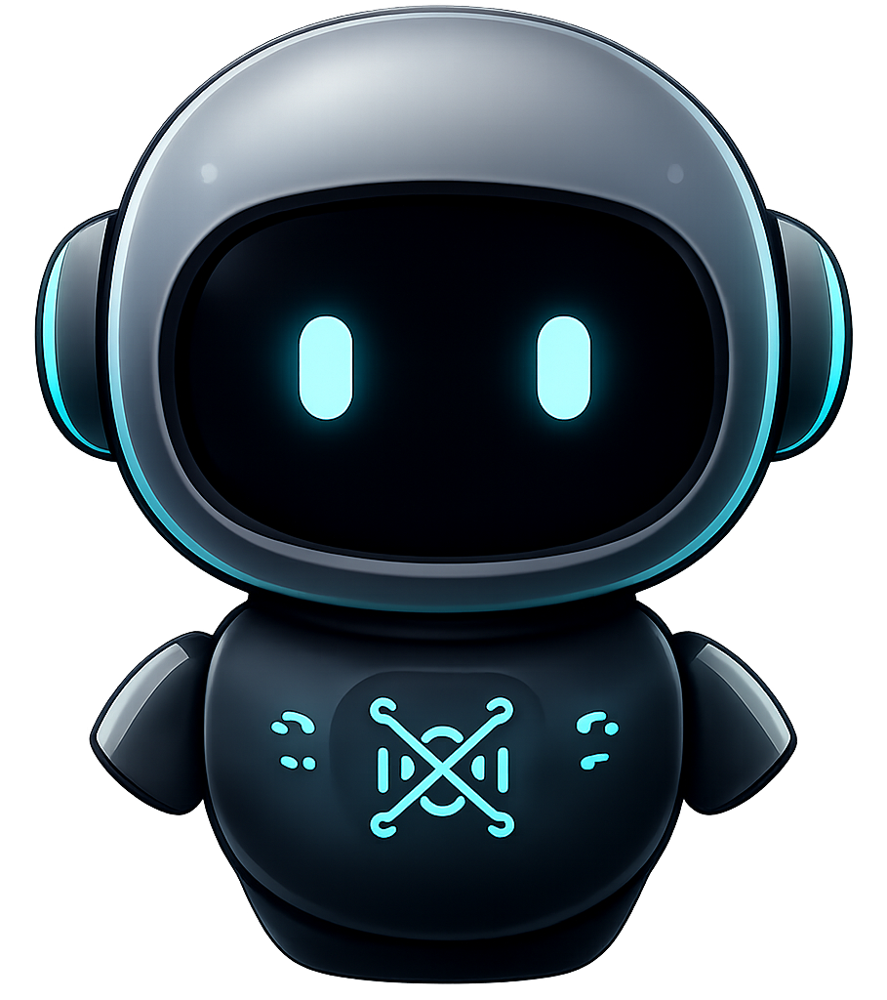
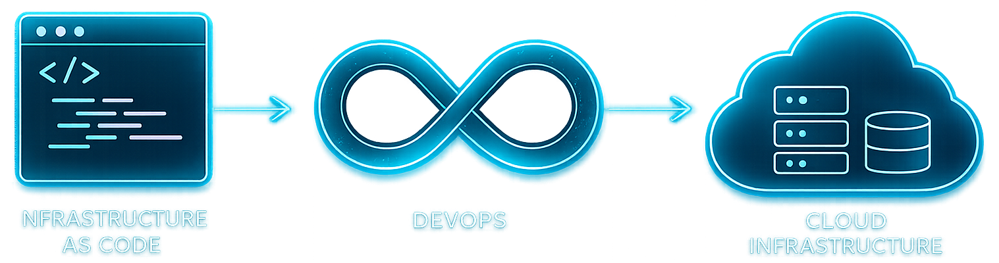

Agentic Engineering & DevOps
Building governed AI workflows and the delivery systems that make them dependable
Designing the complete operating environment around AI-assisted engineering: structured context, reusable skills, tool orchestration, evaluation gates, secure execution, reproducible infrastructure, and production feedback. The objective is not autonomous activity for its own sake, but faster delivery with traceable decisions and verifiable quality.
Governed Agentic Workflow
A useful engineering agent operates as a closed-loop system. Each stage narrows ambiguity, produces an inspectable artifact, and creates evidence for the next decision instead of treating code generation as the entire workflow.
- DescribeUnderstand
Frame the user decision, constraints, risk boundaries, target environment, and measurable definition of done.
- ReviewEvaluate
Inspect the repository, dependencies, current behavior, prior decisions, and conflicting requirements before selecting an approach.
- PlanDecompose
Break the change into bounded steps, identify irreversible actions, and choose verification proportional to technical risk.
- ImplementBuild
Use scoped tools and reusable skills to make minimal, traceable changes while preserving unrelated user work.
- TestHarden
Combine static checks, targeted tests, browser evidence, and adversarial review to challenge the result before release.
- UpdateImprove
Regenerate derived artifacts, record progress and known gaps, and leave stronger context for the next contributor.
The loop connects intent, implementation, verification, and retained project context so each iteration starts from a stronger evidence base.
Agentic Platforms & Engineering Governance
One operating model across multiple assistants
Different coding agents excel at different interaction patterns, but production adoption depends on a shared control model: trusted context, explicit access policy, repeatable skills, bounded tool use, and comparable evaluation.
Platform engineering turns individual productivity tools into an organizational capability by standardizing how agents discover instructions, interact with repositories, request authority, and prove completion.

- Context architecture: repository instructions, progressive disclosure, reusable skills, and compact task handoffs.
- Access governance: least-privilege tools, approval boundaries, secret protection, and auditable external actions.
- Quality systems: acceptance criteria, deterministic checks, browser evidence, and adversarial verification.
- Adoption: common workflows, templates, usage guidance, and measurable reliability across teams.


DevOps Delivery & Cloud Operations

From repository state to operating system
Agentic development only creates durable value when changes move through a reliable software-delivery system. Infrastructure definitions, automated validation, release controls, and operational feedback make generated work reproducible and safe to evolve.
The delivery path is treated as a product: declarative configuration, isolated builds, policy-aware promotion, health checks, rollback paths, and telemetry are designed together rather than added after deployment.
- Infrastructure as code: reviewable environments, repeatable provisioning, and controlled configuration change.
- Continuous delivery: automated build, test, security, packaging, and release gates.
- Runtime assurance: container isolation, observability, incident response, and recovery evidence.
Branching, review, traceability, and reproducible commits preserve intent from request through release.
Fast feedback, layered quality gates, artifact promotion, and automated rollback reduce release risk.
Immutable images and environment parity make local, CI, and production behavior easier to compare.
Metrics, logs, traces, SLOs, and incident learning connect runtime behavior to engineering priorities.
Identity, secrets, dependency controls, scanning, and deployment policy are integrated into the path to production.
Capacity, scaling, failure modes, and spending constraints are evaluated as part of architecture rather than after launch.
Technology Foundation
Cross-platform foundations for repeatable engineering
Production delivery depends on fluency below the agent interface. Linux operations, version control, shell automation, containers, cloud services, collaborative planning, and repository hosting provide the substrate agents act upon.
These tools are connected through conventions and automation so local development, continuous integration, and production operations share the same assumptions wherever possible.